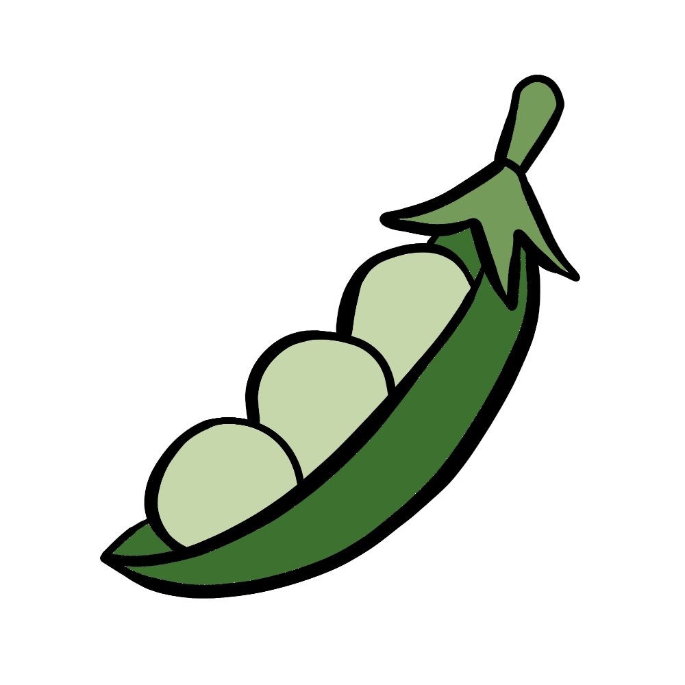

How to grow Peas
A Step by step Guide
Peas are a nutritious and delicious addition to any garden. They grow quickly and require minimal space, making them an excellent choice for both beginners and experienced gardeners. Follow this guide to learn how to grow healthy and productive pea plants at home.
Difficulty Rating: Easy to Moderate
Best Season to Grow: Spring and Fall
Can Be Grown: Both Indoors and Outdoors
Supplies Needed to Grow Peas
Pea seeds (sugar snap, snow peas, or garden peas)
Well-draining, nutrient-rich soil
Compost or balanced fertilizer (10-10-10)
Garden trowel
Watering can or hose
Mulch (straw or wood chips)
Trellis, stakes, or netting (for climbing varieties)
Raised garden bed or deep containers (for small spaces)
Setting Up Your Pea Garden
Choosing the Right Location
Sunlight: Peas thrive in full sun to partial shade, requiring at least 6 hours of sunlight per day.
Soil: Use well-draining soil rich in organic matter, with a pH between 6.0 and 7.5.
Spacing: Plant peas 2 inches apart, with rows spaced 18-24 inches apart.
Indoor Setup: If growing indoors, use deep containers (at least 8 inches deep) and provide a trellis for support.
Preparing the Soil
Loosen the soil to a depth of at least 8 inches to encourage strong root development.
Mix compost into the soil to provide essential nutrients.
Avoid nitrogen-rich fertilizers, as peas fix their own nitrogen in the soil.
Planting Peas
Direct Sowing: Plant seeds 1 inch deep and 2 inches apart in rows.
Support Structures: For climbing varieties, set up a trellis or stakes at planting time to avoid disturbing roots later.
Succession Planting: To extend the harvest, sow new seeds every 2-3 weeks.
Caring for Your Pea Plants

Watering
Keep the soil evenly moist but not soggy, providing 1 inch of water per week.
Water at the base of the plant to prevent fungal diseases.

Fertilizing
Apply a light balanced fertilizer once at planting time.
Avoid excess nitrogen, as it can lead to excessive leaf growth instead of pod production.

Mulching & Weed Control
Apply mulch around plants to retain moisture and suppress weeds.
Regularly remove weeds to prevent competition for nutrients.

Pest and Disease Prevention
Watch for pests such as aphids and pea weevils.
Use insecticidal soap or neem oil to deter pests.
Rotate crops yearly to prevent soil-borne diseases like powdery mildew and root rot.
Harvesting
Peas are ready to harvest in 55-70 days, depending on the variety.
Pick pods when they are plump but before they become tough.
Harvest regularly to encourage continuous production.
By following these steps, you can successfully grow peas and enjoy fresh, homegrown produce in your meals. Happy gardening! 🌱